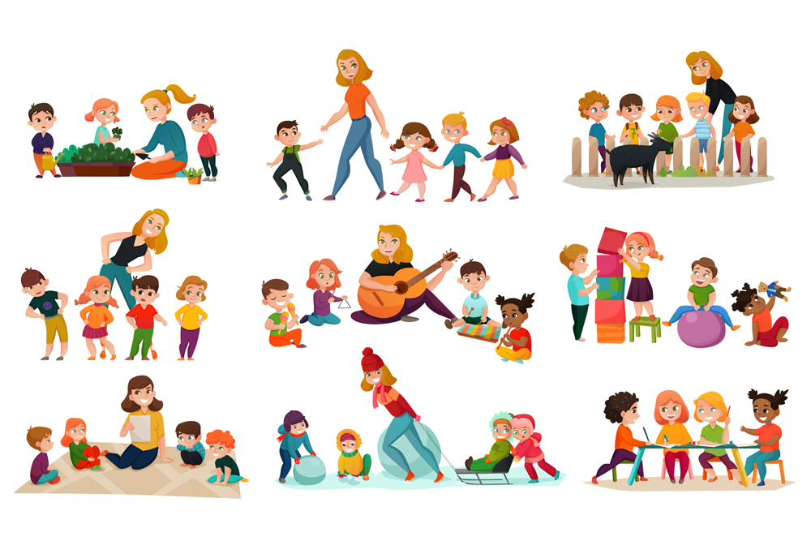

Jul 18, 2018

It can be a challenge for teachers to keep students engaged and interested in learning all the time. Studying can become a tedious task for students and can make them lose their interest. This could negatively affect their progress in school or colleges, as well as have an impact on them. There are a number of ways in which the learning experience for students can be made fun and exciting. Want to know those ways? We can help you with that.
We at ASKMETRIP provide educational learning experiences via carrying out trips for School and College students. We introduce students to a non-traditional way of learning and retaining what they learnt. Some of the ways in which learning can be fun are as mentioned,
1. Sharing personal experiences, knowledge or references.
2. Structuring a student’s learning time.
3. Providing opportunities to work together.
4. Incorporating Hands-on activities.
5. Incorporating technology.
6. Including games.
7. Taking student’s into consideration.
8. Participation in projects.
9. Promoting an interactive session.
The Fun Learn Trip that we organise contains a number of activities that can positively help the growth of the learning process for a student. The main aim of the trip is to inculcate and develop Problem Solving and Anchoring skills in the students. The activities are carried out in the type of a healthy competition and gifts are awarded at the end of the day for each activity that was conducted. Some of the the ways, with the use of which these activities are carried out are as mentioned,
1. MCQ’s.
2. Questionnaires.
3. Quizzes.
4. Brainstorming activities, etc.
Learning can be made fun by indulging the students in some extracurricular and cocurricular activities as well. Schools and Colleges can collectively carry out these activities for their students by going on a Fun Learn Trip.
written by :